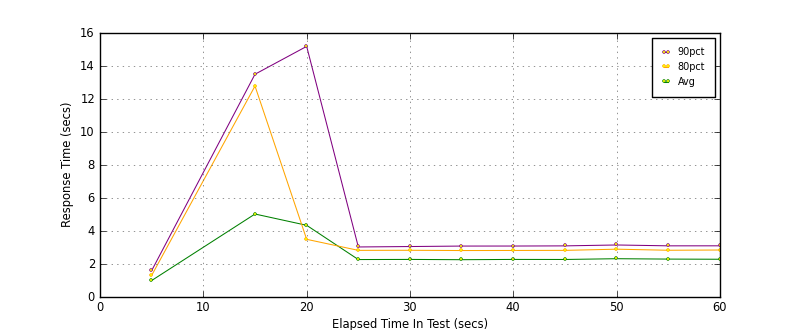

Performance Results Report
Summary
transactions: 22571
errors: 0
run time: 60 secs
rampup: 0 secs
test start: 2017-05-24 18:20:06
test finish: 2017-05-24 18:21:06
time-series interval: 5 secs
workload configuration:
| group name | threads | script name |
|---|
| user_group-21 | 40 | redis_stress.py |
| user_group-20 | 40 | redis_stress.py |
| user_group-23 | 40 | redis_stress.py |
| user_group-22 | 40 | redis_stress.py |
| user_group-25 | 40 | redis_stress.py |
| user_group-24 | 40 | redis_stress.py |
| user_group-2 | 40 | redis_stress.py |
| user_group-3 | 40 | redis_stress.py |
| user_group-1 | 40 | redis_stress.py |
| user_group-6 | 40 | redis_stress.py |
| user_group-7 | 40 | redis_stress.py |
| user_group-4 | 40 | redis_stress.py |
| user_group-5 | 40 | redis_stress.py |
| user_group-8 | 40 | redis_stress.py |
| user_group-9 | 40 | redis_stress.py |
| user_group-10 | 40 | redis_stress.py |
| user_group-11 | 40 | redis_stress.py |
| user_group-12 | 40 | redis_stress.py |
| user_group-13 | 40 | redis_stress.py |
| user_group-14 | 40 | redis_stress.py |
| user_group-15 | 40 | redis_stress.py |
| user_group-16 | 40 | redis_stress.py |
| user_group-17 | 40 | redis_stress.py |
| user_group-18 | 40 | redis_stress.py |
| user_group-19 | 40 | redis_stress.py |
All Transactions
Transaction Response Summary (secs)
| count | min | avg | 80pct | 90pct | 95pct | max | stdev |
|---|
| 22571 | 0.133 | 2.642 | 2.853 | 3.215 | 4.223 | 19.297 | 2.523 |
Interval Details (secs)
| interval | count | rate | min | avg | 80pct | 90pct | 95pct | max | stdev |
|---|
| 1 | 519 | 103.80 | 0.140 | 0.999 | 1.310 | 1.601 | 1.905 | 2.418 | 0.459 |
| 2 | 0 | 0 | N/A | N/A | N/A | N/A | N/A | N/A | N/A |
| 3 | 1257 | 251.40 | 0.239 | 5.029 | 12.786 | 13.502 | 13.941 | 15.032 | 5.917 |
| 4 | 2400 | 480.00 | 0.836 | 4.345 | 3.496 | 15.189 | 15.966 | 18.328 | 5.361 |
| 5 | 2172 | 434.40 | 1.669 | 2.270 | 2.826 | 3.033 | 3.261 | 19.297 | 0.667 |
| 6 | 2208 | 441.60 | 1.676 | 2.278 | 2.831 | 3.058 | 3.323 | 5.769 | 0.575 |
| 7 | 2188 | 437.60 | 1.509 | 2.261 | 2.816 | 3.087 | 3.409 | 5.428 | 0.591 |
| 8 | 2195 | 439.00 | 1.691 | 2.277 | 2.820 | 3.089 | 3.367 | 5.205 | 0.587 |
| 9 | 2187 | 437.40 | 1.715 | 2.274 | 2.826 | 3.099 | 3.367 | 5.430 | 0.575 |
| 10 | 2138 | 427.60 | 0.437 | 2.321 | 2.898 | 3.153 | 3.643 | 5.800 | 0.692 |
| 11 | 2180 | 436.00 | 1.713 | 2.298 | 2.833 | 3.101 | 3.424 | 5.572 | 0.605 |
| 12 | 2125 | 425.00 | 1.712 | 2.288 | 2.848 | 3.102 | 3.396 | 5.858 | 0.586 |
Graphs
Response Time: 5 sec time-series

Response Time: raw data (all points)
Throughput: 5 sec time-series